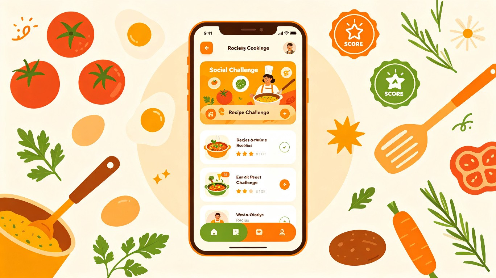
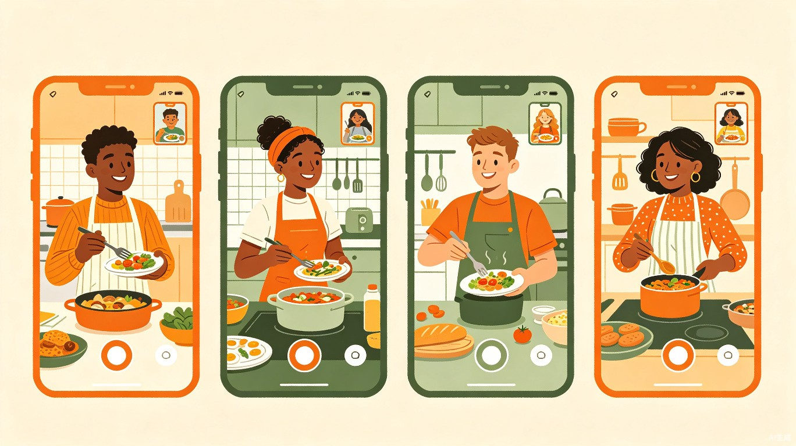

让做饭变成一场社交冒险

厨艺大闯关（Cook Quest） — 一款融合社交挑战与厨艺学习的生活娱乐类 App
当代年轻人想学做饭，但面对满屏菜谱感到无从下手，做出来也无人分享。一个人做饭太孤独，跟着视频学又缺乏互动和成就感。我们需要一个让做饭从"家务"变成"娱乐"的解决方案。
灵感来自我们观察到的一个普遍现象：年轻人明明每天都要吃饭，却越来越不会做饭。短视频时代学做饭的人不少，但 90% 的人看完就忘，缺乏从"看"到"做"的推动力。我们想用游戏化的社交挑战机制，把做饭变成朋友之间的有趣竞赛，让人在欢笑中学会做菜。
一款移动端 App，结合实时视频连麦、AI 菜谱引导和闯关积分系统，让用户和好友组队完成烹饪挑战，在做饭过程中互动聊天、分享成果、积累厨艺成就。
系统每天发布一道"今日挑战菜"，用身边常见食材，限时完成并上传成品照
和好友组队同时做饭，边做边聊，互相"偷师"，远程厨房聚会
语音交互指导火候和步骤，新手也能像大厨一样操作，实时纠错不翻车
从"厨房杀手"到"厨神"，解锁成就徽章和隐藏挑战菜谱
作品动态流、点赞评论、好友排行，分享你的每一步进步
选中菜谱后自动生成购物清单，一键送达附近商超或生鲜电商
想学做饭但不会，外卖吃腻了，追求高性价比生活，社交需求强烈
工作忙碌但渴望健康饮食，一个人做饭缺少动力，希望能和远方好友"云聚餐"
场景一：周末晚上，三个室友各回各家，打开 App 发起"番茄炒蛋挑战赛"，各自在自家厨房同时开火，视频连麦比拼谁的卖相最好。
场景二：下班回家打开"每日挑战"，AI 助手一步步指导做一道快手菜，20 分钟搞定晚饭，顺手晒到社区。
场景三：异地恋情侣周末"约会"，一起做同一道菜，边做边聊，用美食替代千篇一律的视频通话。

完成后获得经验值与积分，累积升级厨艺段位，解锁更高级的隐藏菜谱和特殊挑战模式。
据统计，中国外卖用户已超 5 亿，年轻一代的烹饪能力正在断崖式下降。厨艺大闯关用社交和游戏化降低做饭的心理门槛，让下厨从"不得不做的家务"变成"和朋友一起玩的娱乐活动"，培养健康饮食习惯，减少对外卖的依赖。
App 可通过食材一键下单对接生鲜电商抽佣、品牌挑战赛广告合作、高级菜谱会员解锁、厨艺课程导流等方式实现盈利。以"内容 + 社交 + 电商"三合一模式构建用户粘性，美食赛道市场空间超千亿。
市面上的菜谱 App（如下厨房、小红书美食区）是"工具型"，只解决"做什么菜"的问题。厨艺大闯关是"社交娱乐型"，解决的是"为什么想去做菜"的动机问题。
核心差异：